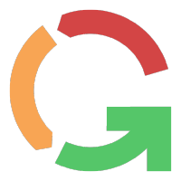

Genny (short for Generic) is an open source project that serves to create an
intelligent "Question and Answer" system.
Using technologies like Quarkus, Kafka and Infinispan, it
can
be used to create complex automation and managment software, with business logic drawn up in workflows
rather than written in code.
Gadatron is an open source product for the Genny system, that contains all of its
varied capabilities.
It could also serve as a starting point for creating new Genny products, or as a
monitoring system for other products.
Genny proudly uses and recommends the ej-technologies java profiler JProfiler!

InternMatch is a global EdTech platform and community focused on employment and career outcomes, bridging the employment gap since 2016.
GO TO SITEMentorMatch is a mentor matching software and program designed to build confidence and social connectedness.
GO TO SITElojing.io is a platform for finding and securing apartments from the build to rent (BTR) market quickly and conviently, before users have even arrived in the country.
GO TO SITE